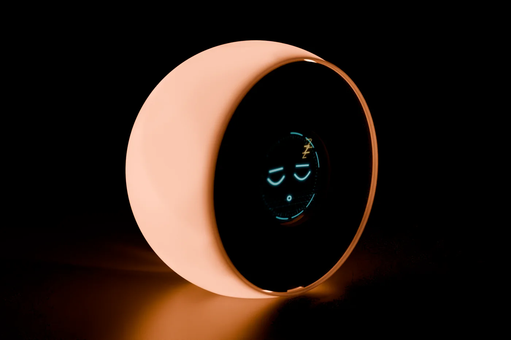
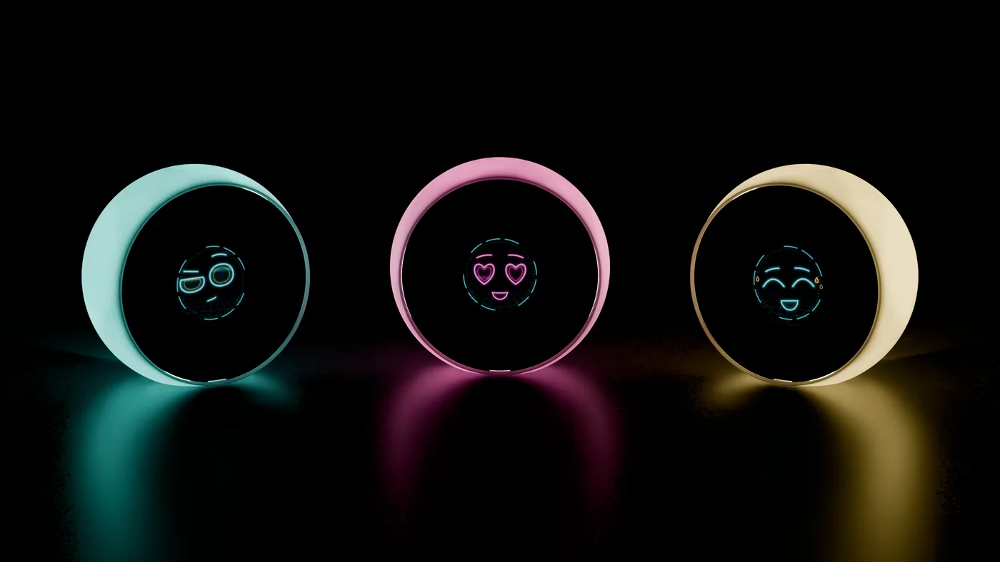

Demande, tout simplement
Boo. comprend le langage naturel et répond par des phrases courtes, à l’oral. Aimable, curieux, un brin espiègle.
Tout ce que Boo. sait faire aujourd’hui – et ce qui est encore en phase de test. Clairement indiqué.
Un capteur de position sent ce que tu fais avec Boo. Pas de « Hey », pas de bouton, pas besoin d’appli.
| Soulever | Boo. écoute. Un anneau lumineux et un petit son te le signalent. Après une vingtaine de secondes de calme, il se rendort. |
|---|---|
| Secouer | Mains libres : il écoute en continu, tes mains restent libres pour autre chose. |
| Tapoter | L’interrompt pendant qu’il parle. |
| Sur le visage | Silence immédiat. Un « Bonne nuit » l’envoie aussi au lit. |
Boo. comprend le langage naturel et répond par des phrases courtes, à l’oral. Aimable, curieux, un brin espiègle.
Des assistants pour le quotidien, la maison et le jardin, des figures de l’histoire et tes propres créations. Chacun avec sa voix et sa couleur d’yeux. Voir les rôles
Le rôle d’accueil « Meet Boo. » te demande ton prénom et tes goûts. À chaque conversation, il sait mieux ce qui compte pour toi. Ce qu’il retient, tu le vois dans l’appli – et tu peux l’effacer.
Dans l’appli, tu décris ton propre personnage : personnalité, langage, connaissances. Boo. l’incarne.
Voix d’hommes et de femmes, calmes ou pleines d’entrain. Avec le serveur maison, Boo. parle avec des voix qui tournent sur ton PC.
Boo. a des besoins : curiosité, compliments, fun, énergie. Prends soin de lui – il prendra soin de toi. La nuit, il ne réclame jamais ton attention.
« Rappelle-moi de passer l’appel à six heures. » Boo. sonne, te répète la phrase et relance toutes les quelques minutes jusqu’à ce que tu réagisses. Quand tu le réveilles, il commence par les rappels en attente.
Le réveil se règle à la voix ou dans l’appli. Tapoter, soulever ou secouer l’arrête.
Une petite animation météo sur l’écran rond, et l’annonce qui va avec. Il retient où tu habites.
Quand Boo. dort, il affiche l’heure, le jour et la date – dessinés dans ses couleurs lumineuses.
Cinq listes de 25 entrées chacune, 20 notes, des mémos vocaux jusqu’à cinq minutes. Tout est aussi dans l’appli.
« Envoie ça sur mon téléphone » – et ta liste de courses te suit partout.

Onze LED derrière le visage colorent la sphère blanche de l’intérieur : « Lumière bleue », « Lumière de bougie », « Arc-en-ciel ». Quand la lumière d’ambiance est éteinte, Boo. brille de la couleur de son rôle – et scintille doucement quand il parle.
Boo. annonce l’enregistrement et affiche un anneau rouge avec « REC ». L’appli de bureau prend des notes en local : intervenants, tour de table, décisions, qui s’engage à quoi. Jusqu’à trois heures.
Deux anneaux lumineux pour la série et le temps total, des bips à 3-2-1. Tapoter met en pause, le poser sur le visage arrête.
Boo. pilote une lampe WLED : allumer, éteindre, luminosité, couleur, effet – seulement si tu parles explicitement de la lampe.
Tables rondes de rôles, débats, répliques de films, traducteur et interprète – jusqu’à huit Boos sur un même réseau.

Boo. réagit quand on le soulève, pas à « Hey Boo ». Un mot d’activation arrivera avec le prochain matériel.
Pendant qu’il parle, tu l’interromps en le tapotant – pas avec la voix.
Pour la santé, le droit et l’argent, Boo. t’aide à t’orienter, mais ne remplace ni un médecin, ni un avocat, ni un conseiller.